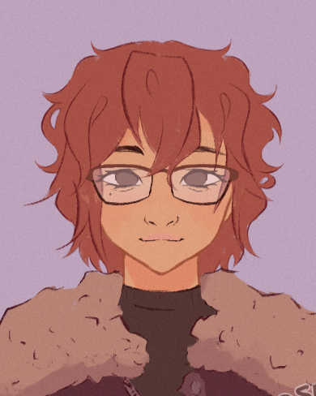

Desenvolvedora júnior full-stack e designer com foco em node.js

Sou estudante da Etec de Mauá, cursando técnico em Desenvolvimento de Sistemas. Meu principal projeto, também meu TCC, é o Enhydra, site de calendário integrado às Etecs, na qual fui responsável pelo banco de dados e back-end. Continuarei a carreira na área de Sistemas da Informação, em busca de mais experiências profissionais.
Tem alguma
dúvida?↗
Entre em contato
dúvida?↗